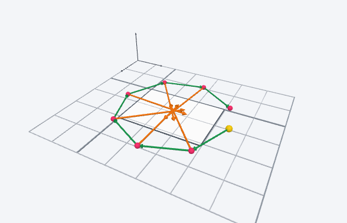

AR の確認（フェーズ1）
同じモデルを4つの方式で開いて、どれが通るかを確かめます
3D へ →
方式1 実ファイルの USDZ（iPhone・iPad）
サーバーに置いた ar-test/test.usdz を AR Quick Look で開きます。
ここが開かなければ、その端末・ブラウザでは AR Quick Look 自体が使えません。

AR で開く（実ファイル）
方式2 実ファイルの GLB（Android）
サーバーに置いた ar-test/test.glb を Scene Viewer で開きます。
Scene Viewer には公開された URL しか渡せないので、本番（その場で作ったモデル）には使えません。基準として試します。
方式3 その場で作った USDZ（iPhone・iPad）★本命
このページの中で USDZ を作り、blob URL のまま AR Quick Look に渡します。
3D仕様.md で「かなり怪しい」とした方式です。これが通れば、本番の書き出しはこの形にします。
方式4 model-viewer に GLB を渡す（両方）
その場で作った GLB を model-viewer で表示し、右下の AR ボタンで開きます。
iPhone では model-viewer が中で USDZ に変換し、Android では WebXR で開きます。初回は 1 MB 読み込みます。
方式5 写真の札（切り抜き）＋動き（iPhone・iPad）
「実物の写真で表示」の確認です。球の代わりに、写真を丸く切り抜いた札を置き、「いま」の札が円を回ります。
写真の代わりに、向きが分かる絵（ピンクのシール・黒い点・R と ↑）を使っています。
見てほしいこと：札が出るか／丸く切り抜かれているか（四角い背景が見えないか）／R が裏返っていないか／裏から見ても見えるか／動くか。
結果の控え
各方式のカードで押した結果がここにまとまります。スクリーンショットか「コピー」で送ってください。